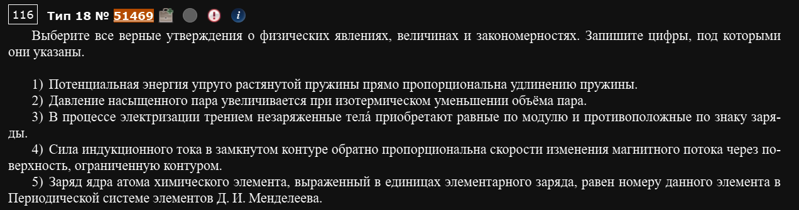
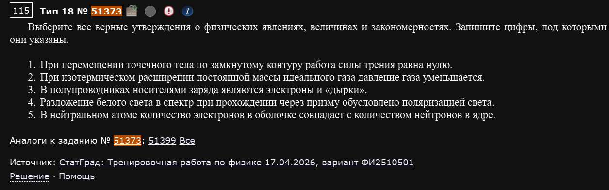
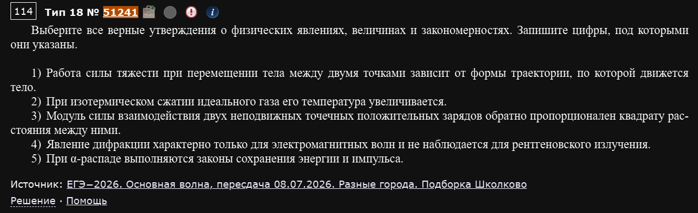
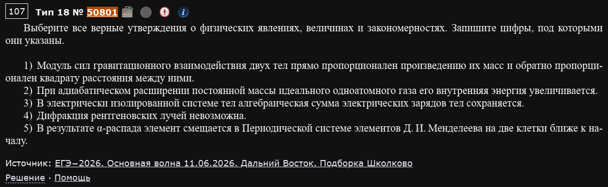
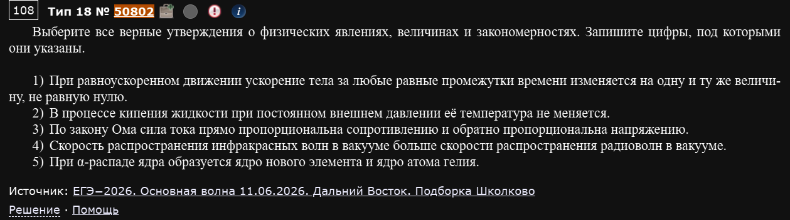

№18. Физический смысл величин, законов и закономерностей
Отдельный от всех остальных номер: здесь нет ни расчётов, ни графиков — только пять коротких утверждений на всю физику сразу (механика, МКТ, электродинамика, оптика, квантовая и ядерная физика), из которых нужно выбрать все верные. По сути это проверка того, насколько точно вы помните формулировки законов — без “почти правильно”, формулировка либо верна дословно, либо нет.
Как читать такие утверждения
Большинство неверных утверждений — не выдумка “из ниоткуда”, а вариация настоящего закона с одной подменённой деталью: перепутаны местами величины в пропорции (“прямо” вместо “обратно”), перепутан похожий процесс (изобарный вместо изотермического), или закону приписан признак от другого явления. Читайте медленно и сверяйте каждое слово с тем, что формулировка должна говорить на самом деле — не с тем, что “похоже на правду”.
Пример 1) (Решу ЕГЭ №51469 — Демонстрационная версия ЕГЭ—2027 по физике)

- Потенциальная энергия упруго растянутой пружины прямо пропорциональна удлинению пружины.
- Давление насыщенного пара увеличивается при изотермическом уменьшении объёма пара.
- В процессе электризации трением незаряженные тела приобретают равные по модулю и противоположные по знаку заряды.
- Сила индукционного тока в замкнутом контуре обратно пропорциональна скорости изменения магнитного потока через поверхность, ограниченную контуром.
- Заряд ядра атома химического элемента, выраженный в единицах элементарного заряда, равен номеру данного элемента в Периодической системе элементов Д. И. Менделеева.
1. — пропорциональна квадрату удлинения, а не самому удлинению. Неверно.
2. Давление насыщенного пара зависит только от температуры и не зависит от объёма (пока в сосуде остаётся хоть немного жидкости) — лишний пар просто конденсируется при сжатии, а давление держится тем же. Неверно.
3. При трении заряд не создаётся из ниоткуда, а просто перераспределяется между двумя изначально нейтральными телами — по закону сохранения заряда они получают равные по модулю и противоположные по знаку заряды. Верно.
4. По закону электромагнитной индукции ЭДС (а с ней и сила тока) прямо пропорциональна скорости изменения потока, а не обратно. Неверно.
5. Это определение атомного номера. Верно.
Ответ: 35.
Пример 2) (Решу ЕГЭ №51373 — СтатГрад: тренировочная работа по физике 17.04.2026, вариант ФИ2510501)

- При перемещении точечного тела по замкнутому контуру работа силы трения равна нулю.
- При изотермическом расширении постоянной массы идеального газа давление газа уменьшается.
- В полупроводниках носителями заряда являются электроны и «дырки».
- Разложение белого света в спектр при прохождении через призму обусловлено поляризацией света.
- В нейтральном атоме количество электронов в оболочке совпадает с количеством нейтронов в ядре.
1. Трение — неконсервативная сила: за полный обход замкнутого контура она совершает ненулевую (отрицательную) работу, рассеивая энергию в тепло. Нулевая работа по контуру — это признак именно консервативных сил (тяжести, упругости, кулоновской). Неверно.
2. Изотермический процесс: . Объём растёт давление падает. Верно.
3. Стандартный факт зонной теории полупроводников. Верно.
4. Разложение в спектр — это дисперсия (разный показатель преломления для разных длин волн), а не поляризация — совершенно другое явление. Неверно.
5. Число электронов в нейтральном атоме равно числу протонов (заряду ядра Z), а не числу нейтронов (которое равно и, как правило, не совпадает с Z). Неверно.
Ответ: 23.
Пример 3) (Решу ЕГЭ №51241 — ЕГЭ-2026, основная волна, пересдача 08.07.2026, разные города, подборка Школково)

- Работа силы тяжести при перемещении тела между двумя точками зависит от формы траектории, по которой движется тело.
- При изотермическом сжатии идеального газа его температура увеличивается.
- Модуль силы взаимодействия двух неподвижных точечных положительных зарядов обратно пропорционален квадрату расстояния между ними.
- Явление дифракции характерно только для электромагнитных волн и не наблюдается для рентгеновского излучения.
- При α-распаде выполняются законы сохранения энергии и импульса.
1. Сила тяжести консервативна — работа зависит только от разности высот начальной и конечной точек, а не от формы пути между ними. Неверно.
2. “Изотермический” по определению означает “при постоянной температуре” — она в принципе не может ни расти, ни падать в таком процессе. Неверно.
3. Это закон Кулона. Верно.
4. Неверно сразу по двум причинам: дифракция — общее свойство любых волн (в том числе механических, звуковых), а не только электромагнитных; и рентгеновское излучение — это тоже электромагнитные волны, для которых дифракция прекрасно наблюдается (на этом основана рентгеноструктурная кристаллография). Неверно.
5. Законы сохранения энергии и импульса выполняются в любых физических процессах, включая все виды ядерных распадов. Верно.
Ответ: 35.
Пример 4) (Решу ЕГЭ №50801 — ЕГЭ-2026, основная волна 11.06.2026, Дальний Восток, подборка Школково)

- Модуль сил гравитационного взаимодействия двух тел прямо пропорционален произведению их масс и обратно пропорционален квадрату расстояния между ними.
- При адиабатическом расширении постоянной массы идеального одноатомного газа его внутренняя энергия увеличивается.
- В электрически изолированной системе тел алгебраическая сумма электрических зарядов тел сохраняется.
- Дифракция рентгеновских лучей невозможна.
- В результате α-распада элемент смещается в Периодической системе элементов Д. И. Менделеева на две клетки ближе к началу.
1. Закон всемирного тяготения. Верно.
2. При адиабатическом процессе теплообмена нет (), а при расширении газ совершает положительную работу над внешними телами. По первому закону термодинамики — внутренняя энергия убывает, а не растёт. Неверно.
3. Закон сохранения электрического заряда. Верно.
4. Как и в примере 3, дифракция рентгеновских лучей вполне наблюдается и активно используется на практике. Неверно.
5. При α-распаде заряд ядра уменьшается на 2 — элемент сдвигается на 2 клетки назад (к началу таблицы), что и утверждается. Верно.
Ответ: 135.
Пример 5) (Решу ЕГЭ №50802 — ЕГЭ-2026, основная волна 11.06.2026, Дальний Восток, подборка Школково)

- При равноускоренном движении ускорение тела за любые равные промежутки времени изменяется на одну и ту же величину, не равную нулю.
- В процессе кипения жидкости при постоянном внешнем давлении её температура не меняется.
- По закону Ома сила тока прямо пропорциональна сопротивлению и обратно пропорциональна напряжению.
- Скорость распространения инфракрасных волн в вакууме больше скорости распространения радиоволн в вакууме.
- При α-распаде ядра образуется ядро нового элемента и ядро атома гелия.
1. При равноускоренном движении ускорение вообще не меняется — оно постоянно (отсюда и название). Утверждение специально сформулировано так, будто ускорение “меняется на постоянную величину”, но на самом деле оно просто не меняется. Неверно.
2. Пока идёт кипение (фазовый переход) при неизменном давлении, температура держится постоянной — вся подводимая теплота идёт на парообразование, а не на нагрев. Верно.
3. Закон Ома перевёрнут: — ток прямо пропорционален напряжению и обратно пропорционален сопротивлению, а не наоборот. Неверно.
4. ИК-волны и радиоволны — оба вида электромагнитных волн, а в вакууме скорость любых электромагнитных волн одна и та же (c), независимо от частоты/длины волны. Неверно.
5. Это стандартное описание α-распада: ядро гелия (-частица) действительно вылетает, оставляя ядро нового (более лёгкого) элемента. Верно.
Ответ: 25.
Проверяйте "перевёрнутые" законы и формулы
Частый трюк — взять правильную формулу и поменять местами “прямо” и “обратно” (как в примере 5, утверждение 3) или заменить величину в числителе на величину в знаменателе. Такие подмены легко пропустить, если читать утверждение “по смыслу” — полезно мысленно сверять со стандартной записью формулы (, и т.д.), а не полагаться на интуицию.
Один и тот же закон может замаскироваться под разные формулировки
В примерах выше несколько раз в разных вариантах встречаются одни и те же классические ловушки: подмена изотермического процесса адиабатным или изобарным, подмена дисперсии поляризацией, путаница между работой консервативных и неконсервативных сил, “рентген не дифрагирует”. Эти конкретные пары понятий стоит держать в голове как отдельный список — они кочуют из варианта в вариант.